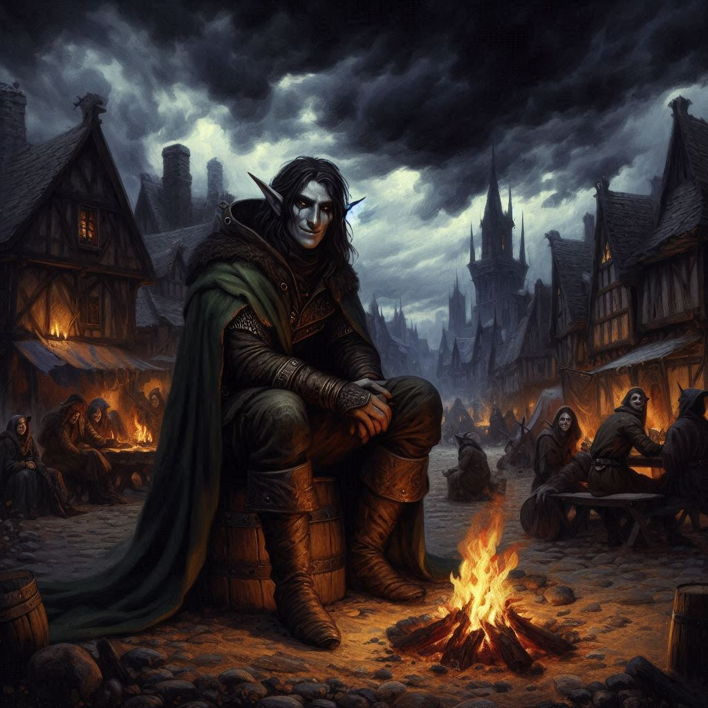

The Treachery of Creosote
You and Elias stand at the edge of the temple ruins, the salty wind from the Shadow Sea whipping your face. Shamurel, the goblin, watches from a distance, his beady eyes pleading for something—perhaps trust, perhaps something else. But you’ve seen enough betrayal in your life. With a silent glance between you and Elias, you decide to part ways with the goblin. His promises of guidance feel too risky. After all, in this cursed place, friends are few and far between.
“Good luck, Shamurel,” you say, your voice cold as the wind. Without another word, you and Elias turn and head down the desolate path toward Umbra'Thal.
The road is harsh, cutting through jagged cliffs overlooking the restless sea below. The Realm of Shadows lives up to its name—an eternal twilight blankets the land, casting everything in shades of gray. Time feels strange here, as if the world itself is frozen in an endless dusk. You grip your bow tighter, feeling the eerie stillness press in on you.
Elias walks silently beside you, his gaze fixed forward. Even though you can’t see his face, you know the weight he’s carrying. You both are. Baider is out there, somewhere in this dark land, held captive by the forces of Varis. You feel a pang of guilt. This was your decision—your choice to come here. And now, every step deeper into this forsaken realm feels like walking further away from hope.
After hours of trudging through the rocky terrain, a flicker of light catches your eye. You squint through the gloom and spot a small village nestled against the cliffs. The houses are crude, made of dark stone and wood, barely holding themselves together. A faint glow of firelight flickers from a central hearth.
“Should we stop?” Elias asks, his voice quiet, uncertain.
You hesitate. Dark elves. Varis’ people. But you can’t deny the ache in your bones, the exhaustion that’s settled into every part of you since you arrived in this cursed realm.
“We don’t have a choice,” you finally say, though the words feel heavy on your tongue. “We need rest.”
The village is eerily quiet as you approach, your boots crunching over the barren ground. The few villagers you see glance at you with hollow, sunken eyes. You can tell immediately they are not warriors—just peasants, their lives worn down by hardship. A tall, gaunt dark elf steps forward as you and Elias near the center of the village.
“I am Creosote,” he says, his voice deep and gravelly. His eyes gleam with a strange, weary kindness. “We have seen your kind before. Travelers, lost in the Shadow Realm. Come, rest. You are welcome here.”
You exchange a cautious glance with Elias, but exhaustion wins out over caution. Creosote leads you to a firepit, where several dark elves sit, stirring a pot of stew. The scent of it hits your nose, and your stomach growls, betraying you. You haven’t eaten properly since entering this realm.
Creosote gestures to the food. “You have traveled far. Eat, regain your strength.”
You’re about to refuse when Elias places a hand on your shoulder. “We need to stay sharp, Kira. We don’t know what lies ahead.”
You nod, and reluctantly take a seat by the fire. The stew is warm, its taste earthy and unfamiliar, but comforting. Creosote watches you closely, his eyes glittering in the firelight.
“You seek the one they call Varis,” he says after a long silence. “The Minister of Trade, the tyrant who oppresses our people. He has enslaved us for generations.”
“We’re not here for your revolution,” Elias says, his voice firm. “We’re here for our own reasons.”
Creosote’s thin lips curl into a smile. “Perhaps. But we are not so different, you and I. You seek justice for your people. We seek freedom from Varis. In this, we are allies.”
You want to believe him. His words hold a ring of truth, and the villagers look so broken, so beaten down by the cruelty of their ruler. But something about this place feels wrong.
“Why would you help us?” you ask, narrowing your eyes.
“Because,” Creosote says, his voice low, “you may be the only ones who can help us.” He leans closer, lowering his voice to a whisper. “There is a weapon in Umbra’Thal. Something powerful enough to destroy Varis once and for all. You will need it, as will we.”
A strange heaviness settles over you. The words, the firelight—it all feels distant, dreamlike. You try to shake the feeling, but your limbs feel sluggish, your mind clouded. You glance at Elias, and his eyes are half-closed, as if struggling to stay awake.
The food.
Your heart pounds in your chest as the realization dawns on you, but it’s too late. The world begins to blur around the edges, and your body feels heavy, sinking into the earth beneath you. You try to stand, to grab your weapons, but your arms won’t respond.
“Elias—” you whisper, but his head droops forward, his body slumping against the stone wall.
Creosote’s grin is wide now, a cruel sneer splitting his face. “Fools,” he hisses. “You were never meant to leave this place.”
Your vision darkens, the last thing you see is the cold firelight flickering in Creosote’s eyes, and you know—this was a trap all along. The road to betrayal was paved with your desperation.
As your body succumbs to the poison, you hear the distant sound of waves crashing against the cliffs and wonder if you’ll ever see the dawn again.